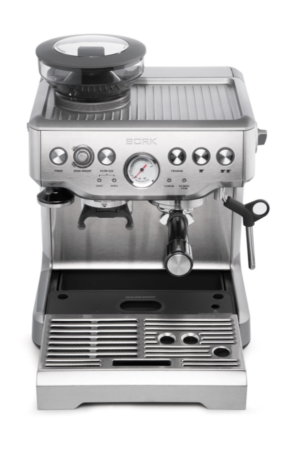
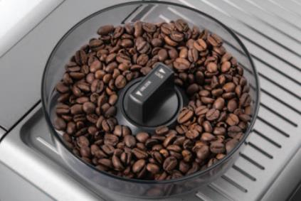
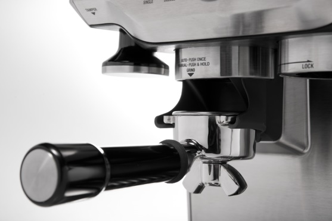
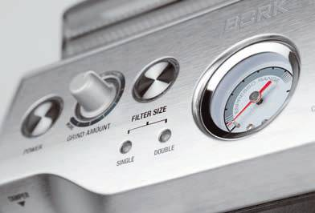
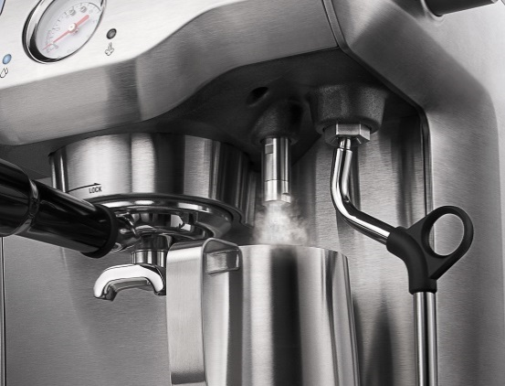
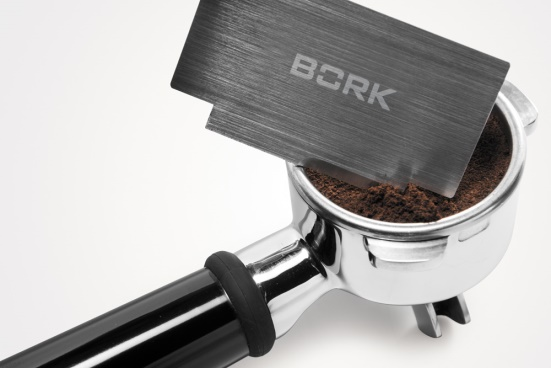
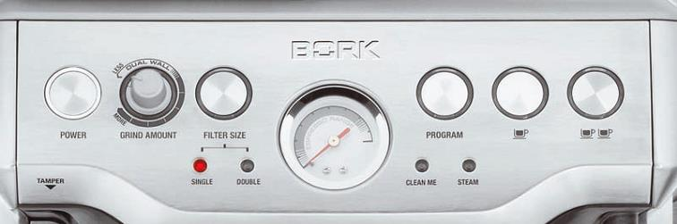

Кофейная станция BORK C804
Технические характеристики
Мощность: 1560-1850 Вт
Давление: 15 бар
Габариты (ВxШxГ): 38x31x29 см
Вес: 10.4 кг
Материал корпуса: нержавеющая сталь
Емкость съемного бака для воды: 2 л
Длина электрического кабеля: 1 м
Срок гарантии: 2 года
Особенности
Встроенная коническая жерновая кофемолка
Кофеварка относится к классу полнофункциональных эспрессо машин, поэтому заваривание каждой чашки кофе начинается с помола зерен.
Регулировка степени помола (18 уровней) позволяет варьировать измельчение кофейных зерен по вкусу и в зависимости от сорта кофе. Объем кофемолки 250 г.
Дозировка количества молотого кофе
Возможность плавной и точной дозировки количества молотого кофе позволит Вам добиться желаемой крепости эспрессо.
Предварительное заваривание
Перед приготовлением через кофе пропускается горячая вода при пониженном давлении (60 % от максимальной потребляемой мощности помпы) в течение 7-ми секунд. Это позволяет добиться оптимальной плотности кофейной таблетки для идеальной экстракции.
Точный контроль температуры и давления
Кофеварка оснащена манометром и автоматическим датчиком контроля температуры для оптимальной экстракции кофе.
Автоматическая функция стабилизации температуры воды
Фильтры с одинарным и двойным дном

Фильтры для воды
Пенал для хранения принадлежностей
Диспенсер подачи горячейводы
Диспетчер предназначен для подачи горячей воды, для приготовления кофе американо, заваривания чая и предварительного подогрева чашек.
Капучинатор
Вращается на 360°.
Аксессуар для выравнивания кофейной таблетки
Пресс для утрамбовки кофе
Панель для подогрева чашек
Цикл полной очистки
Энергосберегающий режим
После 30 минут ожидания кофеварка автоматически переключается в режим энергосбережения. Потребление электроэнергии снижается на 50%.
После 2 часов ожидания кофеварка автоматически отключается.
Регулировка температуры воды
Для каждого сорта кофе нужна своя температура воды при заваривании. Кофейная станция C804 позволяет изменять температуру воды по умолчанию (93°C) в пределах ±2°C.